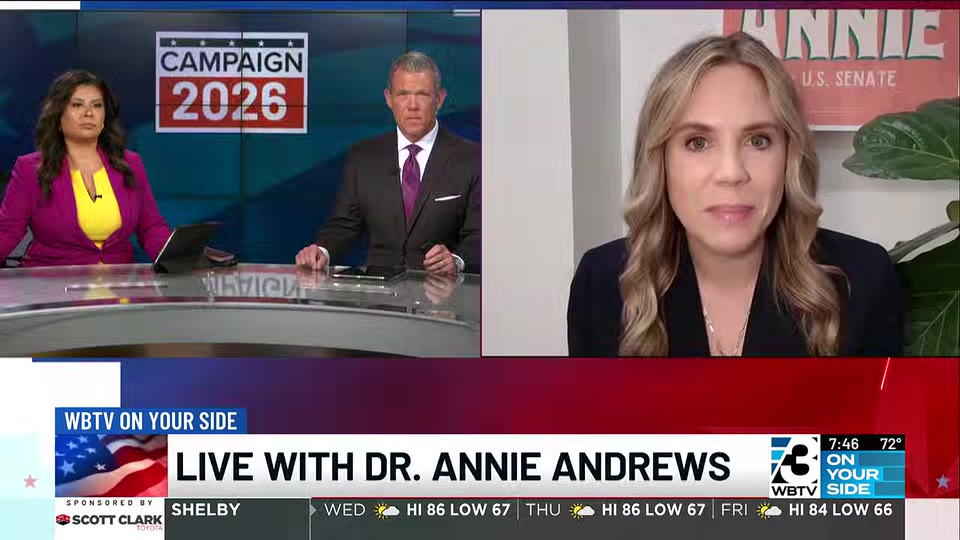
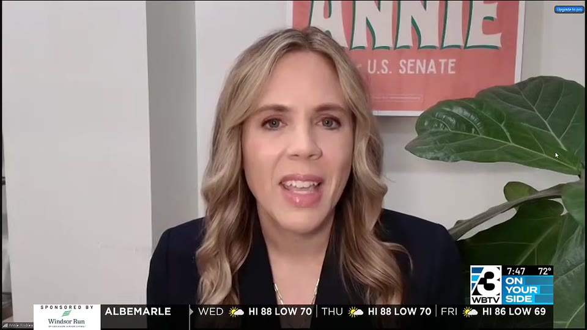
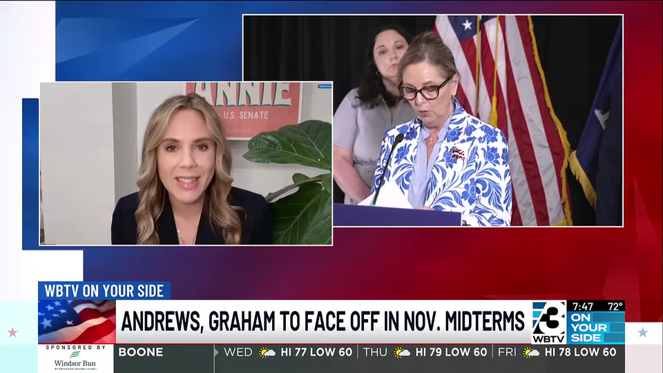
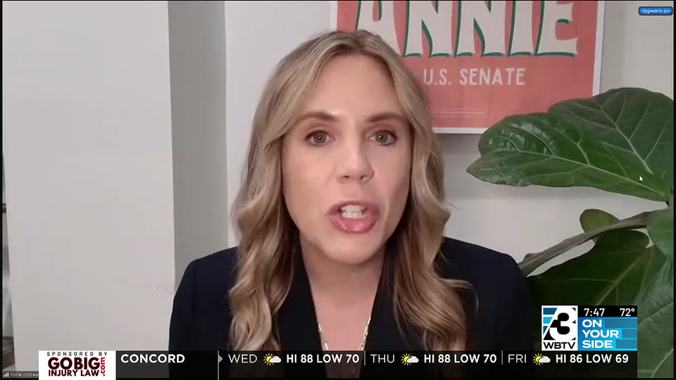
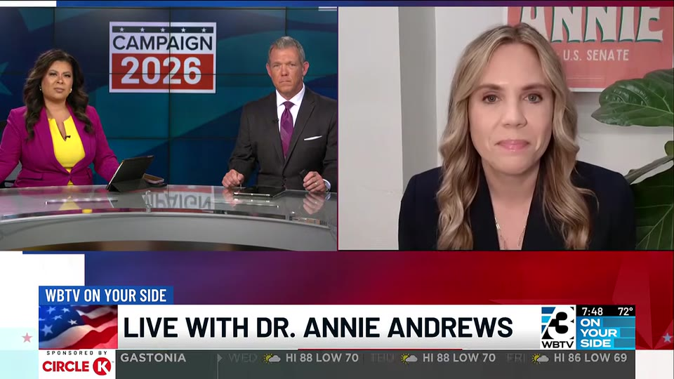
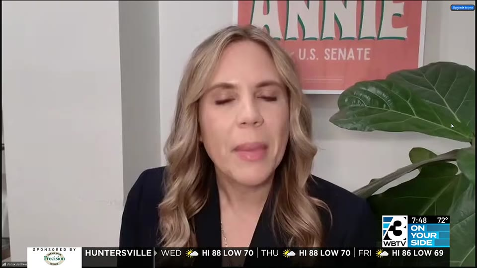
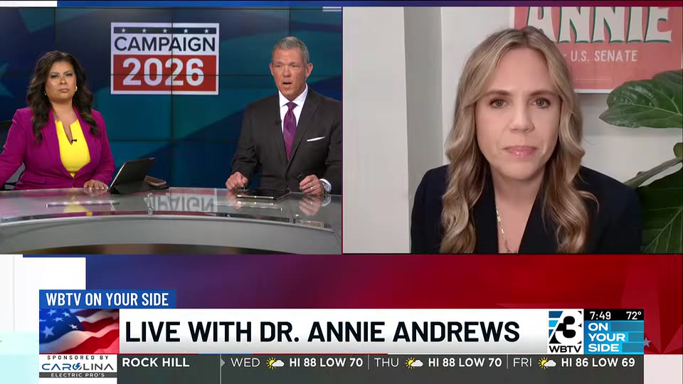
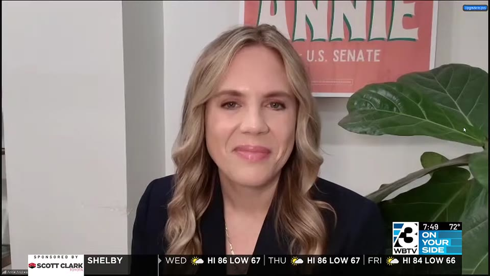
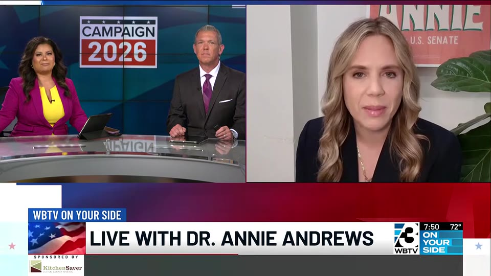

Dr. Annie Andrews joins WBTV's streaming newscast for a live interviewAND_interview_tv_kNBDrVT4HS4
These frames are scene-change samples, not a shot-by-shot edit. Face counts come from YuNet detection at 960 px width; the archive does not caption what is happening in them.


















